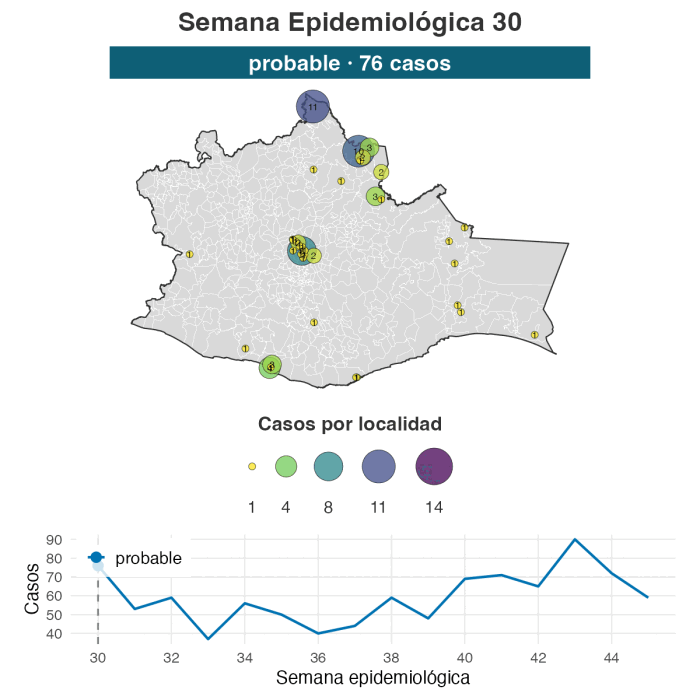
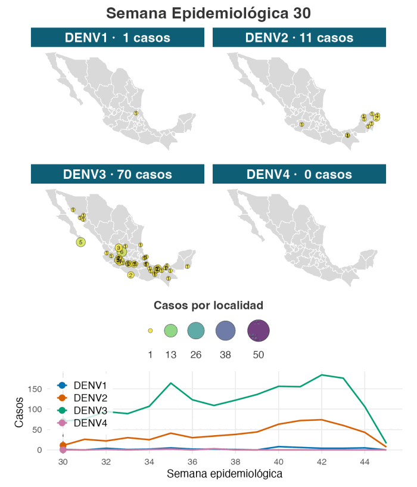
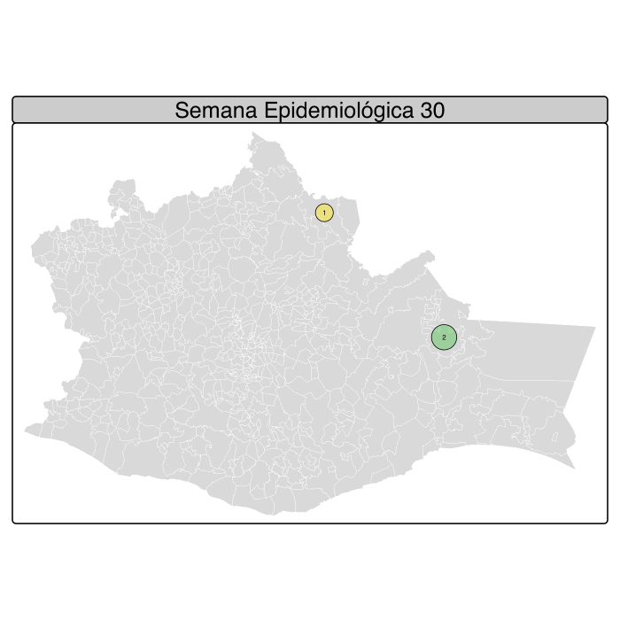

An animated map shows how transmission moves week by week: where it starts, where it spreads and when it fades. densnv has two functions:
| function | unit | cases | engine |
|---|---|---|---|
| mp_animated_loc() | Locality (proportional circles) | Probable, confirmed, final diagnosis or serotype; one or several at once | ggplot2 + gifski, with optional epidemic curve |
| mp_animated_mpo() | Municipality (circles or choropleth) | Confirmed (DNG, DCSA and DG) | tmap + gifski |
Titles and labels are in Spanish, the language of the users of the Mexican vector-borne disease program.
path <- "DENGUE2_.txt"
x <- data.table::fread(path, quote = "", fill = TRUE)mp_animated_loc()
It counts the cases by locality of report and epidemiological week,
and draws them as proportional circles over the state (country) or
municipal (state) boundaries. The size and colour scales are the
same in every frame, so the weeks can be compared. With
curve = TRUE it adds the epidemic curve below, with the
current week marked.
mp_animated_loc(path = path,
snv_dataset = "DENV",
year = 2026,
week = 1:52,
var = "probable",
multi = "sum",
country = FALSE,
cve_edo = "20",
breaks = NULL,
pal = "-viridis",
text_size = 0.4,
fps = 2,
curve = TRUE,
map_legend = TRUE,
legend_title = "Casos por localidad",
save = TRUE,
name = "dengue_oaxaca_2026",
dir = "./")
plot of chunk loc_oaxaca_fig
The var argument takes one or several values:
"probable", "confirmado", "DNG",
"DCSA", "DG", "DENV1" to
"DENV4". With several, multi sets how they are
combined:
multi = "sum": adds them in a single
map (e.g. the severe forms, c("DCSA", "DG")).multi = "facet": one panel per value,
with the same scale (e.g. one panel per serotype). A case can appear in
more than one panel.
mp_animated_loc(path = path,
snv_dataset = "DENV",
year = 2026,
week = 1:52,
var = c("DENV1", "DENV2", "DENV3", "DENV4"),
multi = "facet",
ncol = 2,
country = TRUE,
cve_edo = NULL,
curve = TRUE,
save = TRUE,
name = "serotypes_mexico_2026",
dir = "./")
plot of chunk loc_serotypes_fig
mp_animated_mpo()
It counts the confirmed cases (non-severe dengue, with warning signs
and severe) by municipality of residence and week. With
dot = TRUE it draws proportional circles; with
dot = FALSE, a choropleth map with the palette
pal.
mp_animated_mpo(data = x,
year = 2026,
name = "Oaxaca",
dir = "./",
country = FALSE,
breaks = NULL,
save = TRUE,
cve_edo = "20",
text_size = 0.3,
dot = TRUE,
pal = viridis::viridis)
plot of chunk mpo_oaxaca_fig
fps = 2 or 3 and limit week to
the period of interest.save = TRUE the gif is
saved in dir; with save = FALSE it is only
shown in the RStudio Viewer.mp_animated_loc() uses the locality of
report and the INEGI 2020 locality catalogue
(rgeomex::iter_2020_loc).mp_animated_mpo() uses the municipality of
residence and excludes the cases from other
countries.